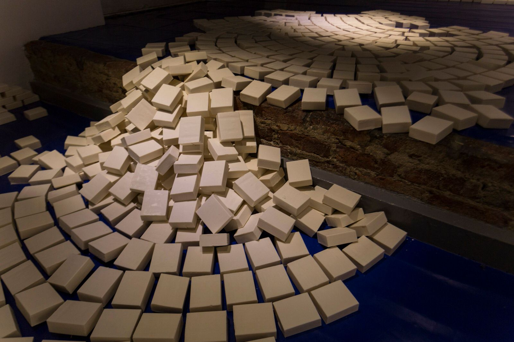
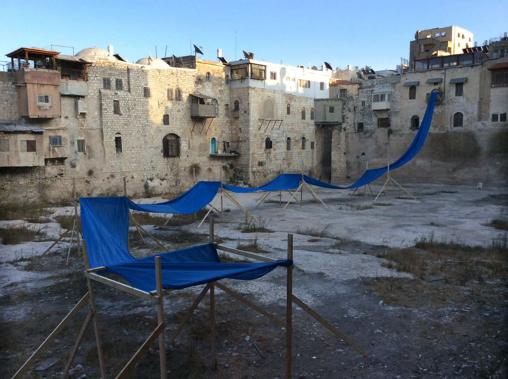
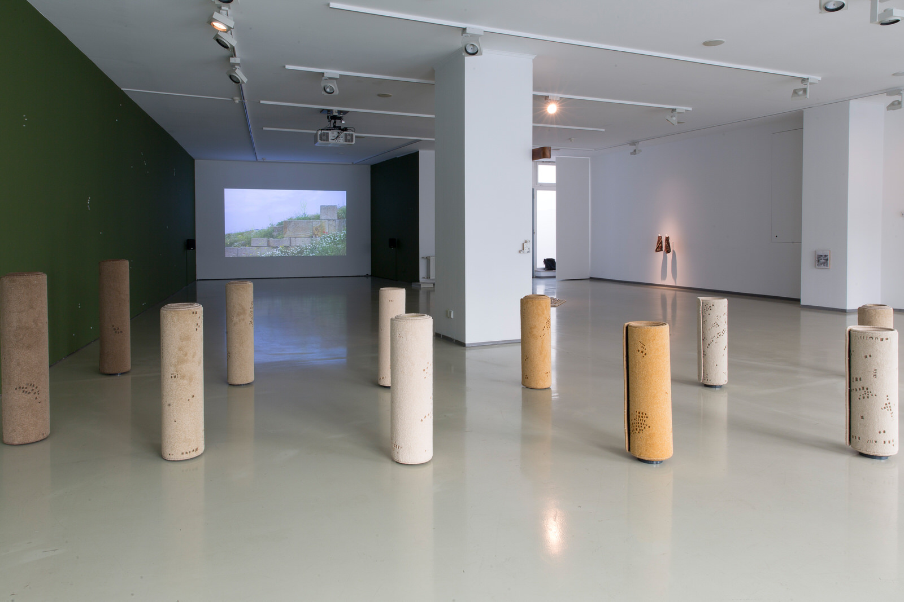
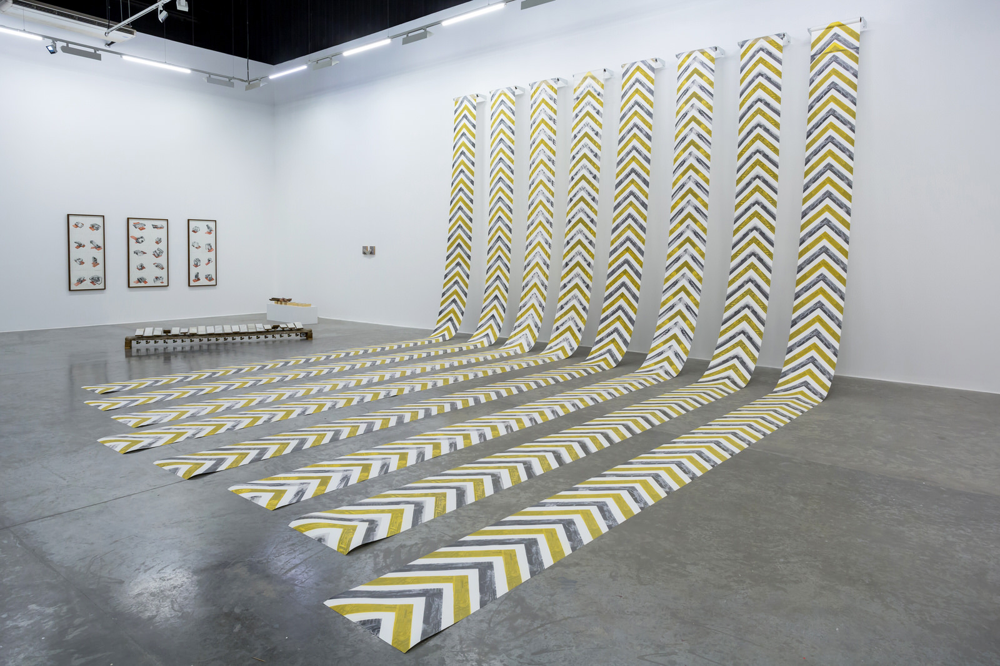

The archaeological record, a body of physical evidence about the past, is often hidden in plain sight; urban growth exposes it more often than it destroys it—there's just too much of it. In an ancient metropolis like Istanbul, it becomes impossible not to tamper with the evidence of the past, in the course of the simplest intervention. At the outermost layer, there's a flimsy and irregular topography under which lurk many subterranean layers, and whatever is exposed of the archaeological record becomes irreparably damaged in the process. It's not only that, but also that later on, the damage becomes part of the record, irretrievably falsifying it. Is it possible, perhaps, to practice a noninvasive archaeology of art and culture that can read records without ripping them apart? From the Princes Islands, an archipelago in the Marmara Sea, 20 km from Istanbul, Greek-Armenian artist Hera Büyüktaşçıyan travels daily to her studio in the now derelict Tarlabaşı neighbourhood, (itself a falsified archaeological record: an early 20th century modernist quarter now turned into a slum, slated for aggressive gentrification) seeking to answer this question. As both witness and record, Büyüktaşçıyan inhabits a world of ambiguity, as her role is shaped by autobiographical narratives of exile and return between Turkey and its earlier Greek past. Yet this narrative is compounded also by the larger journeys of Armenians, from the Venetian island of San Lazzaro, to the Indian subcontinent. The apparently short ferry ride between the Princes Islands and Istanbul encompasses hundreds of years since the foundation of the city in the 7th century BCE, through a long epic of prisons, monasteries, holiday homes for the elite, and subsequent expulsions—the borderline between legend and history isn't clear.
Büyüktaşçıyan, the storyteller, articulates this historical voyage through shapeless balconies and architectural structures (The Land Across the Blind, 2014, Galeri Mana) that do not follow logic, yet upon closer inspection, are neither real nor unreal, but narrative devices. At a time when Turkey became engulfed by a long-lasting political crisis, these fragile elements turned into memory checkpoints also of the present. However, noninvasive archaeology can reveal only fragments, therefore the viewer needs to do his own detective work, and search for clues.

Hera Büyüktaşçıyan, In Situ (detail), 2013
When Büyüktaşçıyan reenacted the Pangaltı Hamam with traditional soap (In Situ, 2013, PIST) a year earlier, the work became prophetic of what was yet to come in Istanbul (understanding prophecy here not as divination of the future, but a totalising of our knowledge about the present). Recreating a memory site that had been destroyed to make space for a generic chain hotel, the artist turns to question the archaeological record: How do you reconstruct something when all the parts have gone missing? Is there a deeper memory?
Soon after the opening, at the nearby Gezi Park, an environmental movement escalated into the largest dissent act in Turkey's recent memory, with a similar strategy: barricades were built from found material, in an attempt to change the course of the past, through redirecting the future. These noninvasive reconstructions, were a reminder of the social potential of architecture and archaeology. From this point onwards, Büyüktaşçıyan's expertise wasn't necessarily the content of her stories, but a specific narrative method: How to articulate multi-temporality from a single source, but yet through a polyphony of events and voices.
When layers go missing from the record, it is not necessary to dig them out violently (the strategy of colonial archaeology); we can reconstruct them also through oral history and witness accounts. To follow the time of things, rather than grand narratives, means to release both the artist and the viewer from the antiquarian fetishism of objects – sought after traces that are often never found. The voyage at sea between the islands and the city is an apt metaphor that encapsulates the artist's entire practice, not only because bodies of water are often present, but also because aquatic movement is a form of deep memory, reaching much further than architecture.

Hera Büyüktaşçıyan,
In the contested old city of Jerusalem, Büyüktaşçıyan reenacted the Patriarch's Pool (The Recovery of an Early Water, 2014, the Jerusalem Show VII), based on textual and photographic sources dating back to Biblical King Hezekiah. A seemingly innocuous gesture reveals more: the area of the pool had been barred to Palestinian residents by the occupation army, and thus, once again, architectural and topographical reenactments open up sites to present scrutiny without falsifying them, changing their past by making it more clearly legible. In a recent project at the Serino Aqueduct in Naples (From There We Came and Saw the Stars, Under the Arches, 2018), the artist explored through aquatic memory an element of flight towards the skies, departing from architectural reenactments towards broader cultural histories beyond Anatolia, reframing the binary Europe/Middle East.

Hera Büyüktaşçıyan, Neither on the Ground nor in the Sky, 2019, Installation view at IFA Berlin, Germany. Image courtesy of the artist, photo by Victoria Tomaschko
Still above the skies, Büyüktaşçıyan brought to Berlin (Neither on the Ground nor in the Sky, IFA Gallery, 2019) an Hellenistic parakeet from a Pergamon mosaic (now held at the eponymous museum in Berlin), telling simultaneously a number of apparently distant but surprisingly correlated stories: the journey of Alexander the Great to Pakistan – the bird's homeland, the destruction of the library of ancient Pergamon, the devastation wrought in Pergamon's acropolis by the German colonial excavations that made it possible to create the Pergamon museum, and the tragic end of the Greek presence in modern day Bergama. Flight is here a reference to freedom, but also to danger and escape. There is a liquefaction at work of the solids of modernity, heading towards the condition of uncertainty that defines contemporary life.

Write Injuries on Sand and Kindness on Marble
The storyteller's access to multi-temporality also means to stress the importance of locality as a source of complexity, rather than relying on the abstraction of globalisation alone. This way, submerged stories foam up to the surface through historical comparisons. A particularly striking example is the exhibition Write Injuries on Sand and Kindness on Marble (Green Art Gallery, 2017) where the artist's investigation into the apparently clean historical slate of Al Quoz revealed the area's recent past as marble factories. The icons for builders, at the heart of the exhibition, are a tribute to the unnamed South Asian workers in the marble factories whose fingerprints were erased by years of arduous work; an astute commentary on labour and invisibility. The encounter between Byzantine iconography and the political geography of trade routes is possible only because the artist is not aiming at reproduction of the form, but at methodological reconstruction of the iconographic process, therefore bypassing anachronism – the physical material remains timeless rather than ancient. An outstanding connection between South Asian migration and modernity in the Gulf becomes part an extended dialogue about antiquity.
This cosmopolitan turn in the artist's practice, dwelling on histories in the plural, presents a much larger picture than the autobiographical, opening up the hierarchies of historical discourse to public scrutiny in a global context. For example: a recent very large-scale intervention in Gigantisme, at the particularly meaningful site of Dunkirk, pivotal for the modern European memory of World War II (followed by a presentation at Liste Basel), or the forthcoming participation in the inaugural Toronto Biennial, exploring traces of time, inspired by the ethnic and cultural diversity of Canada, addressing the notion of foundations.
Büyüktaşçıyan's long trajectory is rich in detours and is nothing of a journey back home, but rather a leaving home behind. It is an attempt to disestablish comfortable notions of belonging and home; she is mapping out the contours of contemporary memory without nostalgia, but firmly grounded on the edges of catastrophic events, thus re-writing the politics of storytelling. Poetry and myth reframe the boundaries of history not as aesthetics or beauty, but rather as the tragic possibilities of human action, facing up to all their discontents and uncertainties.
About Ari Akkermans:
Arie Amaya-Akkermans is a writer and art critic based in Istanbul. His work has appeared in Canvas, Hyperallergic, San Francisco Arts Quarterly, Art Asia Pacific, Harper's Bazar Art Arabia, among others, including several exhibition catalogues and artist monographs in the Middle East region. Previously he was a guest editor of Arte East (2015), moderator in the talks programme of Art Basel (2015-2016), expert fellow at IASPIS, Stockholm (2016), speaker on Orientalism at the Moscow Museum of Modern Art (2017), jury of the young artist platform BASE, Istanbul (2018) and a guest speaker at IFA Gallery, Berlin (2019). He is currently working on a dissertation in archaeology and classics.
 As both witness and record, Hera Büyüktaşçıyan inhabits a world of ambiguity, as her role is shaped by autobiographical narratives of exile and return between Turkey and its earlier Greek past. Yet this narrative is compounded also by the larger journeys of Armenians.”
As both witness and record, Hera Büyüktaşçıyan inhabits a world of ambiguity, as her role is shaped by autobiographical narratives of exile and return between Turkey and its earlier Greek past. Yet this narrative is compounded also by the larger journeys of Armenians.”